← 本轮 smoke 总览traex/DeepSeek-V4.1-Flash · 0010
vision-agent · 256×144 · 4.0 FPS · 20 帧 · 状态 complete · 输出 tokens 43074
原始任务Static locked-off single-shot with fixed frame throughout filmed with constant framerate in real-time. The scene shows a realistic scientific demonstration. The scene only contains the described setup and actions. A light-colored wooden coffee table with a few small objects on it, including a brown tennis ball and a smaller red ball. The orange tennis ball rolls straight out of the black pipe over the entire table towards the right side.
当前保存结果
已保存候选与代码修改
这里按时间展示外部捕获的候选，每份均可单独播放。保存新版本不等于完成视觉检查；下方工具证据记录实际看过的图。
候选 01 · 2026-11-08T19:32:47.443549+00:00 · 点开播放与检查图
inspection.png

transition_check.png

代码变化
--- 上一保存版本
+++ 本次保存版本
@@ -0,0 +1,153 @@
+from pathlib import Path
+
+import cv2
+import numpy as np
+from PIL import Image
+
+import artifact_io
+
+
+CASE_DIR = Path(__file__).resolve().parent
+N_FRAMES = 20
+FPS = 4
+
+
+def smooth_circle_mask(size, radius, softness=0.8):
+ yy, xx = np.mgrid[:size, :size].astype(np.float32)
+ center = (size - 1.0) / 2.0
+ distance = np.hypot(xx - center, yy - center)
+ alpha = np.clip((radius + softness * 0.5 - distance) / softness, 0.0, 1.0)
+ return alpha.astype(np.float32)
+
+
+def make_clean_plate(frame):
+ """Remove the orange ball while retaining the horizontal wood grain."""
+ plate = frame.copy()
+ yy, xx = np.mgrid[: frame.shape[0], : frame.shape[1]]
+
+ # Include the original ball and its tiny contact shadow, but no table edge.
+ ball_area = ((xx - 71.7) / 9.4) ** 2 + ((yy - 51.2) / 9.8) ** 2 <= 1.0
+ shadow_area = ((xx - 71.8) / 7.5) ** 2 + ((yy - 59.7) / 2.2) ** 2 <= 1.0
+ repair_mask = ball_area | shadow_area
+
+ # Wood grain runs almost horizontally here. Interpolating each row from the
+ # unobstructed pixels on either side avoids the smearing of generic inpaint.
+ for y in range(40, 64):
+ xs = np.flatnonzero(repair_mask[y])
+ if not len(xs):
+ continue
+ left = max(0, int(xs.min()) - 3)
+ right = min(frame.shape[1] - 1, int(xs.max()) + 3)
+ while left > 0 and repair_mask[y, left]:
+ left -= 1
+ while right < frame.shape[1] - 1 and repair_mask[y, right]:
+ right += 1
+ t = (np.arange(left, right + 1) - left) / max(1, right - left)
+ for channel in range(3):
+ plate[y, left : right + 1, channel] = np.rint(
+ frame[y, left, channel] * (1.0 - t) + frame[y, right, channel] * t
+ ).astype(np.uint8)
+
+ # A restrained Telea pass smooths the repaired silhouette without erasing
+ # the wood's fine horizontal texture.
+ feather_mask = cv2.dilate(repair_mask.astype(np.uint8), np.ones((3, 3), np.uint8), iterations=1)
+ repaired = cv2.inpaint(plate, feather_mask, 1.4, cv2.INPAINT_TELEA)
+ blend = cv2.GaussianBlur(feather_mask.astype(np.float32), (0, 0), 0.7)
+ blend = np.clip(blend * 0.35, 0.0, 1.0)[..., None]
+ plate = np.rint(plate * (1.0 - blend) + repaired * blend).astype(np.uint8)
+ return plate
+
+
+def extract_ball(frame):
+ """Lift the original ball into an antialiased RGBA sprite."""
+ size = 19
+ cx, cy = 71.6, 51.1
+ left = int(round(cx - (size - 1) / 2.0))
+ top = int(round(cy - (size - 1) / 2.0))
+ patch = frame[top : top + size, left : left + size].astype(np.float32)
+ alpha = smooth_circle_mask(size, 8.2, 1.0)
+ rgba = np.dstack([patch, alpha * 255.0]).astype(np.uint8)
+ return rgba, (cx - left, cy - top)
+
+
+def add_contact_shadow(image, cx, cy):
+ """Composite a soft, shallow shadow beneath the sphere."""
+ h, w = image.shape[:2]
+ x0, x1 = max(0, int(cx - 10)), min(w, int(cx + 11))
+ y0, y1 = max(0, int(cy + 4)), min(h, int(cy + 12))
+ if x0 >= x1 or y0 >= y1:
+ return
+ yy, xx = np.mgrid[y0:y1, x0:x1].astype(np.float32)
+ sx = 7.8
+ sy = 2.0
+ shadow = np.exp(-0.5 * (((xx - (cx + 0.9)) / sx) ** 2 + ((yy - (cy + 7.7)) / sy) ** 2))
+ shadow *= 0.30
+ region = image[y0:y1, x0:x1].astype(np.float32)
+ tint = np.array([70.0, 52.0, 39.0], dtype=np.float32)
+ region[:] = region * (1.0 - shadow[..., None]) + tint * shadow[..., None]
+ image[y0:y1, x0:x1] = np.clip(np.rint(region), 0, 255).astype(np.uint8)
+
+
+def composite_sprite(image, sprite, source_center, cx, cy):
+ """Bilinearly place an RGBA sprite at a subpixel center."""
+ h, w = image.shape[:2]
+ sh, sw = sprite.shape[:2]
+ scx, scy = source_center
+ x0 = int(np.floor(cx - scx)) - 1
+ y0 = int(np.floor(cy - scy)) - 1
+ x1 = int(np.ceil(cx - scx + sw)) + 1
+ y1 = int(np.ceil(cy - scy + sh)) + 1
+ tx0, ty0 = max(0, x0), max(0, y0)
+ tx1, ty1 = min(w, x1), min(h, y1)
+ if tx0 >= tx1 or ty0 >= ty1:
+ return
+
+ map_x = (np.arange(tx0, tx1, dtype=np.float32) - (cx - scx)).astype(np.float32)
+ map_y = (np.arange(ty0, ty1, dtype=np.float32) - (cy - scy)).astype(np.float32)
+ grid_x, grid_y = np.meshgrid(map_x, map_y)
+ warped = cv2.remap(
+ sprite,
+ grid_x,
+ grid_y,
+ interpolation=cv2.INTER_LINEAR,
+ borderMode=cv2.BORDER_CONSTANT,
+ borderValue=(0, 0, 0, 0),
+ )
+ rgb = warped[..., :3].astype(np.float32)
+ alpha = (warped[..., 3:4].astype(np.float32) / 255.0)
+ base = image[ty0:ty1, tx0:tx1].astype(np.float32)
+ image[ty0:ty1, tx0:tx1] = np.clip(np.rint(base * (1.0 - alpha) + rgb * alpha), 0, 255).astype(np.uint8)
+
+
+def generate_frames():
+ first = np.asarray(Image.open(CASE_DIR / "first_frame.png").convert("RGB"))
+ plate = make_clean_plate(first)
+ sprite, source_center = extract_ball(first)
+
+ frames = []
+ for index in range(N_FRAMES):
+ if index == 0:
+ frames.append(first.copy())
+ continue
+
+ frame = plate.copy()
+ t = index / FPS
+
+ # Low rolling friction on a smooth table: about 175 px in five seconds.
+ velocity = 50.5
+ drag_time = 7.0
+ travel = velocity * drag_time * (1.0 - np.exp(-t / drag_time))
+ cx = 71.6 + travel
+ cy = 51.1 - 0.041 * travel + 0.000055 * travel * travel
+
+ add_contact_shadow(frame, cx, cy)
+ composite_sprite(frame, sprite, source_center, cx, cy)
+ frames.append(frame)
+
+ return np.stack(frames)
+
+
+if __name__ == "__main__":
+ frames = generate_frames()
+ artifact_io.save(frames, CASE_DIR)
+ print(f"saved {len(frames)} frames to {CASE_DIR}")
候选 02 · 2026-11-08T19:36:23.129358+00:00 · 点开播放与检查图
inspection.png

transition_check.png
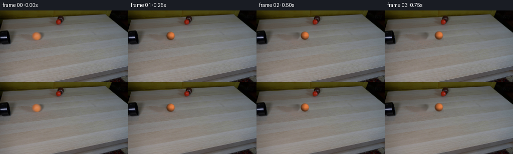
代码变化
--- 上一保存版本
+++ 本次保存版本
@@ -10,14 +10,6 @@
CASE_DIR = Path(__file__).resolve().parent
N_FRAMES = 20
FPS = 4
-
-
-def smooth_circle_mask(size, radius, softness=0.8):
- yy, xx = np.mgrid[:size, :size].astype(np.float32)
- center = (size - 1.0) / 2.0
- distance = np.hypot(xx - center, yy - center)
- alpha = np.clip((radius + softness * 0.5 - distance) / softness, 0.0, 1.0)
- return alpha.astype(np.float32)
def make_clean_plate(frame):
@@ -58,16 +50,46 @@
return plate
-def extract_ball(frame):
- """Lift the original ball into an antialiased RGBA sprite."""
- size = 19
- cx, cy = 71.6, 51.1
- left = int(round(cx - (size - 1) / 2.0))
- top = int(round(cy - (size - 1) / 2.0))
- patch = frame[top : top + size, left : left + size].astype(np.float32)
- alpha = smooth_circle_mask(size, 8.2, 1.0)
- rgba = np.dstack([patch, alpha * 255.0]).astype(np.uint8)
- return rgba, (cx - left, cy - top)
+def render_ball(angle):
+ """Render a tiny orange felt ball with fixed lighting and rolling texture."""
+ scale = 4
+ size = 23
+ yy, xx = np.mgrid[: size * scale, : size * scale].astype(np.float32)
+ center = (size * scale - 1.0) / 2.0
+ nx = (xx - center) / (8.45 * scale)
+ ny = (yy - center) / (8.45 * scale)
+ rr = np.hypot(nx, ny)
+ nz = np.sqrt(np.clip(1.0 - rr * rr, 0.0, 1.0))
+
+ # Rotate the surface texture in the image plane as the ball rolls.
+ ca, sa = np.cos(angle), np.sin(angle)
+ tx = ca * nx - sa * ny
+ ty = sa * nx + ca * ny
+ texture = (
+ 0.024 * np.sin(6.1 * tx + 2.4 * ty + 2.7 * nz)
+ + 0.018 * np.sin(11.0 * ty - 4.6 * tx + 0.9)
+ + 0.012 * np.sin(17.0 * tx + 7.0 * ty)
+ )
+
+ light = np.array([0.43, -0.50, 0.75], dtype=np.float32)
+ light /= np.linalg.norm(light)
+ diffuse = np.clip(nx * light[0] + ny * light[1] + nz * light[2], 0.0, 1.0)
+ edge_ao = np.clip(1.0 - 0.22 * np.maximum(-ny, 0.0) - 0.09 * rr, 0.0, 1.0)
+ brightness = (0.36 + 0.72 * diffuse) * edge_ao
+ brightness *= 1.0 + texture
+
+ # Broad sheen visible near the upper-right portion of the original ball.
+ sheen = np.clip((nx * 0.55 - ny * 0.62 + nz * 0.56 - 0.63) / 0.37, 0.0, 1.0) ** 2
+ brightness += 0.09 * sheen
+ albedo = np.array([232.0, 130.0, 69.0], dtype=np.float32)
+ color = np.clip(albedo[None, None, :] * brightness[..., None], 0.0, 255.0)
+
+ # A slightly feathered edge reproduces the soft, fuzzy perimeter.
+ radius_px = rr * 8.45 * scale
+ alpha = np.clip((8.75 * scale - radius_px) / (1.1 * scale), 0.0, 1.0)
+ rgba = np.dstack([color, alpha[..., None] * 255.0]).astype(np.uint8)
+ rgba = cv2.resize(rgba, (size, size), interpolation=cv2.INTER_AREA)
+ return rgba
def add_contact_shadow(image, cx, cy):
@@ -80,8 +102,9 @@
yy, xx = np.mgrid[y0:y1, x0:x1].astype(np.float32)
sx = 7.8
sy = 2.0
- shadow = np.exp(-0.5 * (((xx - (cx + 0.9)) / sx) ** 2 + ((yy - (cy + 7.7)) / sy) ** 2))
- shadow *= 0.30
+ broad = np.exp(-0.5 * (((xx - (cx + 1.0)) / (sx + 1.6)) ** 2 + ((yy - (cy + 7.9)) / (sy + 0.8)) ** 2))
+ core = np.exp(-0.5 * (((xx - (cx + 0.8)) / (sx - 1.8)) ** 2 + ((yy - (cy + 7.5)) / (sy - 0.4)) ** 2))
+ shadow = 0.075 * broad + 0.15 * core
region = image[y0:y1, x0:x1].astype(np.float32)
tint = np.array([70.0, 52.0, 39.0], dtype=np.float32)
region[:] = region * (1.0 - shadow[..., None]) + tint * shadow[..., None]
@@ -122,8 +145,6 @@
def generate_frames():
first = np.asarray(Image.open(CASE_DIR / "first_frame.png").convert("RGB"))
plate = make_clean_plate(first)
- sprite, source_center = extract_ball(first)
-
frames = []
for index in range(N_FRAMES):
if index == 0:
@@ -141,6 +162,9 @@
cy = 51.1 - 0.041 * travel + 0.000055 * travel * travel
add_contact_shadow(frame, cx, cy)
+ angle = -travel / 8.45
+ sprite = render_ball(angle)
+ source_center = (11.0, 11.0)
composite_sprite(frame, sprite, source_center, cx, cy)
frames.append(frame)
候选 03 · 2026-11-08T19:39:26.120318+00:00 · 点开播放与检查图
inspection.png
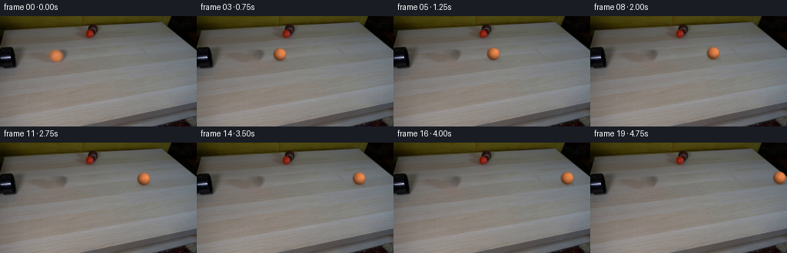
transition_check.png
代码变化
--- 上一保存版本
+++ 本次保存版本
@@ -74,14 +74,14 @@
light = np.array([0.43, -0.50, 0.75], dtype=np.float32)
light /= np.linalg.norm(light)
diffuse = np.clip(nx * light[0] + ny * light[1] + nz * light[2], 0.0, 1.0)
- edge_ao = np.clip(1.0 - 0.22 * np.maximum(-ny, 0.0) - 0.09 * rr, 0.0, 1.0)
- brightness = (0.36 + 0.72 * diffuse) * edge_ao
+ edge_ao = np.clip(1.0 - 0.14 * np.maximum(-ny, 0.0) - 0.06 * rr, 0.0, 1.0)
+ brightness = (0.43 + 0.68 * diffuse) * edge_ao
brightness *= 1.0 + texture
# Broad sheen visible near the upper-right portion of the original ball.
sheen = np.clip((nx * 0.55 - ny * 0.62 + nz * 0.56 - 0.63) / 0.37, 0.0, 1.0) ** 2
- brightness += 0.09 * sheen
- albedo = np.array([232.0, 130.0, 69.0], dtype=np.float32)
+ brightness += 0.08 * sheen
+ albedo = np.array([226.0, 132.0, 75.0], dtype=np.float32)
color = np.clip(albedo[None, None, :] * brightness[..., None], 0.0, 255.0)
# A slightly feathered edge reproduces the soft, fuzzy perimeter.
可观测工具行为
命令 1 · 2026-11-08T19:30:53.279376+00:00/bin/bash -c "pwd && rg --files -g '"'!*.git*'"' | sed -n '1,120p'"
exit 0 命令 2 · 2026-11-08T19:30:53.393450+00:00/bin/bash -c 'cat prompt.txt'
exit 0 命令 3 · 2026-11-08T19:30:53.738856+00:00/bin/bash -c 'cat GENERATION_RULES.md'
exit 0 命令 4 · 2026-11-08T19:30:53.953477+00:00/bin/bash -c 'file first_frame.png && identify first_frame.png 2>/dev/null || true && ls -la'
exit 0 命令 5 · 2026-11-08T19:31:01.708807+00:00/bin/bash -c "sed -n '1,260p' artifact_io.py"
exit 0 命令 6 · 2026-11-08T19:31:01.906514+00:00/bin/bash -c "sed -n '1,260p' player_template.html"
exit 0 命令 7 · 2026-11-08T19:31:02.202511+00:00/bin/bash -c "python - <<'PY'
from PIL import Image
im=Image.open('first_frame.png')
print(im.size, im.mode)
PY"exit 0 命令 8 · 2026-11-08T19:31:19.629279+00:00/bin/bash -c "python - <<'PY'
from PIL import Image
im=Image.open('first_frame.png')
im.crop((0,0,160,100)).resize((960,600)).save('.tmp/crop.png')
PY"exit 0 命令 9 · 2026-11-08T19:31:35.775663+00:00/bin/bash -c "python - <<'PY'
from PIL import Image
im=Image.open('first_frame.png')
im.crop((40,20,100,85)).resize((600,650), Image.Resampling.NEAREST).save('.tmp/ball_initial.png')
im.crop((90,0,150,50)).resize((600,500), Image.Resampling.NEAREST).save('.tmp/ball_red.png')
PY"exit 0 命令 10 · 2026-11-08T19:31:51.932283+00:00/bin/bash -c "python - <<'PY'
mods=['numpy','PIL','cv2','scipy','skimage']
for m in mods:
try:
mod=__import__(m); print(m, getattr(mod,'__version__','ok'))
except Exception as e: print(m, 'NO', e)
PY"
exit 0 命令 11 · 2026-11-08T19:31:56.650237+00:00/bin/bash -c "python - <<'PY'
from PIL import Image
import numpy as np
im=np.array(Image.open('first_frame.png'))
# scan for orange pixels: R>G etc
r,g,b=[im[:,:,i].astype(int) for i in range(3)]
m=(r>120)&(r>g*1.2)&(g>b*1.1)
y,x=np.where(m)
print('orange bbox',x.min(),y.min(),x.max(),y.max(), 'n',len(x))
# groups simple by x
for lo,hi in [(0,80),(80,130),(130,256)]:
mm=m.copy(); mm[:,:lo]=False; mm[:,hi:]=False
y,x=np.where(mm)
if len(x): print(lo,hi, x.min(),y.min(),x.max(),y.max(),len(x))
PY"exit 0 命令 12 · 2026-11-08T19:32:46.081988+00:00/bin/bash -c 'python generate.py'
exit 0 命令 13 · 2026-11-08T19:32:58.051894+00:00/bin/bash -c "python - <<'PY'
from PIL import Image
for i in [0,1,2,5,10,15,19]:
im=Image.open(f'frames/{i:02d}.png')
im.crop((max(0, min(150, (70+int(i*9.2))-20)),25,min(256,max(70,70+int(i*9.2)+35)),75)).resize((660,600), Image.Resampling.NEAREST).save(f'.tmp/f{i:02d}_zoom.png')
PY"exit 0 命令 14 · 2026-11-08T19:33:11.540308+00:00/bin/bash -c "python - <<'PY'
from PIL import Image
import numpy as np
im=np.array(Image.open('first_frame.png'))
# print RGB values on ball and immediate right edge
for y in range(42,61,2):
print(y, [tuple(im[y,x]) for x in range(62,83,2)])
PY"exit 0 命令 15 · 2026-11-08T19:33:45.411089+00:00/bin/bash -c "python - <<'PY'
from PIL import Image
im=Image.open('first_frame.png')
for name, box, scale in [('ball',(54,35,90,70),12),('pipe',(0,24,70,68),10),('table',(0,0,256,144),3),('red',(95,0,140,45),10)]:
crop=im.crop(box)
crop.resize((crop.width*scale,crop.height*scale), Image.Resampling.NEAREST).save(f'.tmp/{name}.png')
PY"exit 0 命令 16 · 2026-11-08T19:33:57.177670+00:00/bin/bash -c "python - <<'PY'
from PIL import Image
import numpy as np
im=np.array(Image.open('first_frame.png'))
# estimate alpha from ball model color vs local tabletop (row median on clean pixels)
r=im[:,:,0].astype(float); g=im[:,:,1].astype(float); b=im[:,:,2].astype(float)
for y in range(38,65):
vals=[]
for x in range(55,90):
if r[y,x]-b[y,x]>25:
vals.append(x)
if vals: print(y,min(vals),max(vals),len(vals))
PY"exit 0 命令 17 · 2026-11-08T19:34:02.074255+00:00/bin/bash -c "python - <<'PY'
from PIL import Image
import numpy as np
im=np.array(Image.open('first_frame.png'))
# Fit circle to red/orange chroma region, excluding shadow-ish low chroma pixels
r=im[:,:,0].astype(float); g=im[:,:,1].astype(float); b=im[:,:,2].astype(float)
chroma=(r-b)
y,x=np.where((chroma>45)&(x_placeholder:=np.ones_like(chroma,dtype=bool)) if False else (chroma>45))
sel=(x>55)&(x<90)&(y>35)&(y<65)
x=x[sel]; y=y[sel]
A=np.c_[2*x,2*y,np.ones(len(x))]; q=x*x+y*y
p=np.linalg.lstsq(A,q,rcond=None)[0]
cx,cy=p[0],p[1]; rad=np.sqrt(p[2]+cx*cx+cy*cy)
print(cx,cy,rad, len(x))
PY"exit 0 命令 18 · 2026-11-08T19:34:10.215240+00:00/bin/bash -c "python - <<'PY'
from PIL import Image
import numpy as np
first=np.asarray(Image.open('first_frame.png'))
f=np.asarray(Image.open('frames/00.png'))
print('identical', np.array_equal(first,f), np.abs(first.astype(int)-f.astype(int)).max())
from generate import make_clean_plate
p=make_clean_plate(first)
Image.fromarray(p).save('.tmp/plate.png')
Image.fromarray(p[28:72,45:100]).resize((660,528), Image.Resampling.NEAREST).save('.tmp/plate_zoom.png')
PY"exit 0 命令 19 · 2026-11-08T19:34:21.772214+00:00/bin/bash -c "python - <<'PY'
from PIL import Image
import numpy as np
im=np.array(Image.open('first_frame.png')).astype(int)
for y in range(40,64):
s=''
for x in range(58,89):
c=im[y,x,0]-im[y,x,2]
s += '##' if c>50 else '++' if c>25 else '..' if c>10 else ' '
print(f'{y:02d}',s)
PY"exit 0 命令 20 · 2026-11-08T19:34:26.289640+00:00/bin/bash -c "python - <<'PY'
from PIL import Image
import numpy as np
im=np.array(Image.open('first_frame.png')).astype(float)
# local row background sampled x=50-58 and 87-95, robust mean
for y in range(40,64):
l=np.median(im[y,48:58],axis=0); r=np.median(im[y,88:98],axis=0)
bg=(l+r)/2
print(y, 'bg',np.round(bg).astype(int),'x61',im[y,61].astype(int),'x63',im[y,63].astype(int),'x83',im[y,83].astype(int),'x85',im[y,85].astype(int))
PY"exit 0 命令 21 · 2026-11-08T19:34:30.269845+00:00/bin/bash -c "python - <<'PY'
from PIL import Image
im=Image.open('frames/05.png')
# crop around expected ball center x=72+approx 45=117
im.crop((95,25,140,70)).resize((720,720),Image.Resampling.NEAREST).save('.tmp/f05_tight.png')
PY"exit 0 命令 22 · 2026-11-08T19:34:38.006452+00:00/bin/bash -c "python - <<'PY'
from PIL import Image
import numpy as np
im=np.array(Image.open('first_frame.png'))
# Save contrast-enhanced ball to inspect edges
crop=im[34:70,54:91].astype(float)
# local minmax saturation
x=crop.copy()
lo=x.min(axis=2,keepdims=True); hi=x.max(axis=2,keepdims=True)
x=np.clip((x-lo)/(hi-lo+1e-6)*255,0,255).astype('uint8')
Image.fromarray(x).resize((740,720),Image.Resampling.NEAREST).save('.tmp/ball_contrast.png')
PY"exit 0 命令 23 · 2026-11-08T19:34:46.162391+00:00/bin/bash -c "python - <<'PY'
from PIL import Image
import numpy as np
im=np.array(Image.open('first_frame.png')).astype(float)
# saturation chroma alpha estimate
r,g,b=im[:,:,0],im[:,:,1],im[:,:,2]
ch=r-b
# local background chroma row interpolated
for y in range(40,64):
vals=[]
for x in range(55,90):
if ch[y,x]>35: vals.append(x)
if vals:
print(y, min(vals), max(vals), 'chroma', [round(ch[y,x]) for x in range(max(55,min(vals)-2),min(90,max(vals)+3))])
PY"exit 0 命令 24 · 2026-11-08T19:34:51.024218+00:00/bin/bash -c "python - <<'PY'
from PIL import Image
import numpy as np
im=np.array(Image.open('first_frame.png')).astype(float)
ch=im[:,:,0]-im[:,:,2]
# alpha based on chroma / 140, colored difference, clip
for y in range(43,61):
row=[]
for x in range(62,84):
row.append(max(0,min(1,ch[y,x]/120)))
print(y,' '.join(' .:-=+*#%@'[min(9,int(v*9.99))] for v in row))
PY"exit 0 命令 25 · 2026-11-08T19:35:18.174975+00:00/bin/bash -c "python - <<'PY'
from PIL import Image
import numpy as np
from generate import make_clean_plate
first=np.array(Image.open('first_frame.png'))
plate=make_clean_plate(first)
f=np.array(Image.open('frames/05.png'))
d=np.abs(f.astype(int)-plate.astype(int)).sum(2)
y,x=np.where(d>10)
print(x.min(),x.max(),y.min(),y.max(),len(x))
# output diff map region
reg=np.clip(d[25:75,90:145]*3,0,255).astype('uint8')
Image.fromarray(reg).resize((550,500),Image.Resampling.NEAREST).save('.tmp/diff05.png')
PY"exit 0 命令 26 · 2026-11-08T19:35:25.975265+00:00/bin/bash -c "python - <<'PY'
from PIL import Image
import numpy as np
im=np.array(Image.open('first_frame.png')).astype(int)
# table bg sampled interpolated x endpoints for y 43-59
for y in range(43,60):
l=im[y,52:62].mean(0); r=im[y,84:94].mean(0)
print(y, 'L',l.round().astype(int),'R',r.round().astype(int))
PY"exit 0 命令 27 · 2026-11-08T19:35:34.658623+00:00/bin/bash -c "python - <<'PY'
from PIL import Image
import numpy as np
im=np.array(Image.open('first_frame.png')).astype(float)
# print RGB center region around ball at 2px steps
for y in range(42,61,2):
print(y,[tuple(im[y,x].astype(int)) for x in range(62,84,2)])
PY"exit 0 命令 28 · 2026-11-08T19:36:21.828984+00:00/bin/bash -c 'python generate.py'
exit 0 命令 29 · 2026-11-08T19:36:29.142389+00:00/bin/bash -c "python - <<'PY'
from PIL import Image
for i in [1,5,10,15,19]:
im=Image.open(f'frames/{i:02d}.png')
cx=72+int(i*8.65)
im.crop((max(0,cx-18),25,min(256,cx+18),70)).resize((576,720),Image.Resampling.NEAREST).save(f'.tmp/r{i:02d}.png')
PY"exit 0 命令 30 · 2026-11-08T19:36:43.578410+00:00/bin/bash -c "python - <<'PY'
from PIL import Image
import numpy as np
for f in ['first_frame.png','frames/01.png','frames/05.png','frames/10.png','frames/19.png']:
im=np.array(Image.open(f))
# ball detect via chroma
r,g,b=[im[:,:,i].astype(int) for i in range(3)]
m=(r-b>45)&(r>130)
y,x=np.where(m)
# remove red marker area top
s=y>30
y,x=y[s],x[s]
print(f, (x.mean(),y.mean()) if len(x) else None, (x.min(),y.min(),x.max(),y.max()) if len(x) else None, len(x))
PY"
exit 0 命令 31 · 2026-11-08T19:36:48.501178+00:00/bin/bash -c "python - <<'PY'
from PIL import Image
import numpy as np
from generate import render_ball, composite_sprite
im=np.array(Image.open('.tmp/plate.png'))
s=render_ball(-3)
composite_sprite(im,s,(11,11),72.5,51.3)
Image.fromarray(im).crop((55,32,90,70)).resize((700,760),Image.Resampling.NEAREST).save('.tmp/rendered_ball.png')
PY"exit 0 命令 32 · 2026-11-08T19:36:57.513799+00:00/bin/bash -c "python - <<'PY'
from PIL import Image
import numpy as np
im=np.array(Image.open('first_frame.png')).astype(float)
y0,y1,x0,x1=41,63,59,88
# background predicted by interpolating row median from left and right (exclude central 26)
bg=np.zeros_like(im[y0:y1,x0:x1])
for yy in range(y0,y1):
l=np.median(im[yy,49:59],axis=0); r=np.median(im[yy,89:99],axis=0)
t=(np.arange(x0,x1)-49)/(99-49)
bg[yy-y0]=l[None,:]*(1-t[:,None])+r[None,:]*t[:,None]
patch=im[y0:y1,x0:x1]
# alpha from chroma against bg
cp=patch[:,:,0]-patch[:,:,2]; cb=bg[:,:,0]-bg[:,:,2]
a=np.clip((cp-cb)/115,0,1)
# maybe alpha from color difference magnitude
# foreground color estimate = orange interior target per brightness; do simple ratio extrapolation
fg=np.array([210.,134.,82.])
out=bg*(1-a[...,None])+fg[None,None,:]*a[...,None]
# Save alpha
Image.fromarray((a*255).astype('uint8')).resize((870,660),Image.Resampling.NEAREST).save('.tmp/alpha.png')
print('alpha max',a.max(),'bbox',np.where(a>.1)[1].min(),np.where(a>.1)[1].max(),np.where(a>.1)[0].min(),np.where(a>.1)[0].max())
PY"exit 0 命令 33 · 2026-11-08T19:37:13.726759+00:00/bin/bash -c "python - <<'PY'
from PIL import Image
im=Image.open('.tmp/plate.png')
im.crop((45,32,98,72)).resize((795,600),Image.Resampling.NEAREST).save('.tmp/plate_check.png')
PY"exit 0 命令 34 · 2026-11-08T19:37:21.347628+00:00/bin/bash -c "python - <<'PY'
from PIL import Image
import numpy as np
im=np.array(Image.open('first_frame.png')).astype(int)
for y in range(42,62):
print(y, ' '.join(f'{im[y,x,0]-im[y,x,2]:3d}' for x in range(58,89)))
PY"exit 0 命令 35 · 2026-11-08T19:37:29.818676+00:00/bin/bash -c "python - <<'PY'
from PIL import Image
import numpy as np
# compare actual original ball to rendered at same spot at 4x crop side-by-side
orig=np.array(Image.open('first_frame.png'))
from generate import render_ball, composite_sprite
im=np.array(Image.open('.tmp/plate.png'))
composite_sprite(im,render_ball(-3),(11,11),72.6,51.1)
a=orig[35:68,56:90]; b=im[35:68,56:90]
out=np.concatenate([a,b],axis=1)
Image.fromarray(out).resize((1360,660),Image.Resampling.NEAREST).save('.tmp/ball_compare.png')
PY"exit 0 命令 36 · 2026-11-08T19:37:38.172561+00:00/bin/bash -c "python - <<'PY'
from PIL import Image
import numpy as np
from generate import make_clean_plate
first=np.array(Image.open('first_frame.png'))
p=make_clean_plate(first)
# compare clean plate and first in rows/cols around ball
for y in [44,46,48,50,52,54,56,58,60]:
print('y',y,'first', [tuple(first[y,x]) for x in range(58,89,4)])
print(' plate', [tuple(p[y,x]) for x in range(58,89,4)])
PY"exit 0 命令 37 · 2026-11-08T19:37:45.174654+00:00/bin/bash -c "python - <<'PY'
from PIL import Image
import numpy as np
im=np.array(Image.open('first_frame.png')).astype(float)
# estimate background using columns around ball and surface gradient
# circle model from alpha mask, use alpha levels and find color foreground from alpha=1 median
cx,cy=72.4,51.2
y0,y1,x0,x1=40,64,58,90
Y,X=np.mgrid[y0:y1,x0:x1]
r=np.hypot(X-cx,Y-cy)
# Use boundary at r=10, estimate local bg as radial nearest x outside at same y
# background from row interpolation
bg=np.empty((y1-y0,x1-x0,3))
for yy in range(y0,y1):
l=np.median(im[yy,48:58],axis=0); rr=np.median(im[yy,91:101],axis=0)
t=(np.arange(x0,x1)-58)/(91-58)
bg[yy-y0]=l[None,:]*(1-t[:,None])+rr[None,:]*t[:,None]
# Fit alpha threshold from color distance to bg, alpha = clip((dist-5)/dist(fg-bg))
# Try chroma only
fg=np.array([205.,130.,80.])
alpha=np.clip((r-8.7)/1.0,0,1)
# Use observed color to derive alpha by least squares: patch = bg*(1-a)+fg*a => a dot((fg-bg),(patch-bg))/norm
v=fg-bg; d=im[y0:y1,x0:x1]-bg
a=(d*v).sum(2)/(v*v).sum(2); a=np.clip(a,0,1)
# visualize
Image.fromarray((a*255).astype('uint8')).resize((640,480),Image.Resampling.NEAREST).save('.tmp/a2.png')
print('alpha stats',a.min(),a.max(),np.percentile(a,[25,50,75,90,95]))
PY"exit 0 命令 38 · 2026-11-08T19:37:54.403437+00:00/bin/bash -c "python - <<'PY'
from PIL import Image
import numpy as np
im=np.array(Image.open('first_frame.png')).astype(float)
# circle region where chroma > threshold gives rough alpha. Recover original ball colors as average observed where alpha=1
# alpha estimate using chroma minus baseline
ch=im[:,:,0]-im[:,:,2]
a=np.clip((ch-15)/100,0,1)
# fit a model to interior: interior rgb = measured; use alpha=1 core
Image.fromarray((a*255).astype('uint8')).crop((55,35,90,68)).resize((700,660),Image.Resampling.NEAREST).save('.tmp/a3.png')
PY"exit 0 命令 39 · 2026-11-08T19:38:02.436311+00:00/bin/bash -c "python - <<'PY'
from PIL import Image
import numpy as np
im=np.array(Image.open('first_frame.png')).astype(float)
# print median of ball core RGB per row, plus chroma extents
for y in range(43,60):
xs=np.where((im[y,:,0]-im[y,:,2])>60)[0]
xs=xs[(xs>58)&(xs<90)]
if len(xs): print(y,xs.min(),xs.max(),np.median(im[y,xs],axis=0).astype(int))
PY"exit 0 命令 40 · 2026-11-08T19:38:07.601727+00:00/bin/bash -c "python - <<'PY'
from PIL import Image
import numpy as np
from generate import make_clean_plate, render_ball, composite_sprite
first=np.array(Image.open('first_frame.png'))
p=make_clean_plate(first)
# full-size ball output for native compare
im=p.copy(); composite_sprite(im,render_ball(0),(11,11),72.6,51.1)
Image.fromarray(np.concatenate([first,im],axis=1)).save('.tmp/fullcompare.png')
PY"exit 0 命令 41 · 2026-11-08T19:38:15.539564+00:00/bin/bash -c "python - <<'PY'
from PIL import Image
import numpy as np
first=np.array(Image.open('first_frame.png'))
for i in [0,1,5,10,15,19]:
f=np.array(Image.open(f'frames/{i:02d}.png'))
d=np.abs(f.astype(int)-first.astype(int)).sum(2)
ys,xs=np.where(d>2)
print(i,'changed',len(xs),'bbox', (xs.min(),ys.min(),xs.max(),ys.max()) if len(xs) else None)
PY"exit 0 命令 42 · 2026-11-08T19:38:20.511942+00:00/bin/bash -c "python - <<'PY'
from PIL import Image
import numpy as np
first=np.array(Image.open('first_frame.png'))
for i in [1,5,10,15,19]:
f=np.array(Image.open(f'frames/{i:02d}.png'))
d=np.abs(f.astype(int)-first.astype(int)).sum(2)
# changed pixels far left
m=d>2; m[:,80:]=False
ys,xs=np.where(m)
print(i,len(xs), (xs.min(),ys.min(),xs.max(),ys.max()) if len(xs) else None)
PY"exit 0 命令 43 · 2026-11-08T19:38:25.383190+00:00/bin/bash -c "python - <<'PY'
from PIL import Image
import numpy as np
from generate import make_clean_plate
f=np.array(Image.open('first_frame.png')); p=make_clean_plate(f)
d=np.abs(f.astype(int)-p.astype(int)).sum(2)
Image.fromarray(np.clip(d[35:68,55:90]*3,0,255).astype('uint8')).resize((700,660),Image.Resampling.NEAREST).save('.tmp/plate_diff.png')
PY"exit 0 命令 44 · 2026-11-08T19:38:35.063073+00:00/bin/bash -c "python - <<'PY'
from PIL import Image
import numpy as np
im=np.array(Image.open('first_frame.png')).astype(float)
# Find circle edge via alpha model using local bg from p output; save overlay with center/radius
from generate import make_clean_plate
bg=make_clean_plate(im.astype('uint8')).astype(float)
# estimate alpha projection fg as brightest orange inside
fg=np.array([210.,135.,88.])
d=im-bg; v=fg-bg
a=(d*v).sum(2)/(v*v).sum(2)
a=np.clip(a,0,1)
# restrict to candidate circle
Y,X=np.mgrid[:144,:256]; r=np.hypot(X-72.5,Y-51.3); a[r>12]=0
# print boundary at a>.3
for y in range(41,62):
xs=np.where(a[y]>0.3)[0]
if len(xs): print(y,xs.min(),xs.max(), np.round(a[y,xs],2).tolist())
PY"exit 0 命令 45 · 2026-11-08T19:38:39.690083+00:00/bin/bash -c "python - <<'PY'
from PIL import Image
import numpy as np
im=np.array(Image.open('first_frame.png')).astype(float)
# original values of ball edge positions relative to center and compare with circle radius 8.8
for y in range(44,59):
xs=np.where((im[y,:,0]-im[y,:,2])>45)[0]
xs=xs[(xs>55)&(xs<90)]
print(y, xs.min()-72.5 if len(xs) else None, xs.max()-72.5 if len(xs) else None)
PY"exit 0 命令 46 · 2026-11-08T19:38:44.902615+00:00/bin/bash -c "python - <<'PY'
from PIL import Image
import numpy as np
from generate import make_clean_plate
f=np.array(Image.open('first_frame.png')); p=make_clean_plate(f)
# sample a horizontal row in clean plate to inspect texture, render wide strip
Image.fromarray(p[40:65,45:100]).resize((1100,500),Image.Resampling.NEAREST).save('.tmp/clean_ball_strip.png')
PY"exit 0 命令 47 · 2026-11-08T19:39:00.965609+00:00/bin/bash -c "python - <<'PY'
import numpy as np
from pathlib import Path
from PIL import Image
frames=np.stack([np.asarray(Image.open(p).convert('RGB')) for p in sorted(Path('frames').glob('*.png'))])
first=np.asarray(Image.open('first_frame.png').convert('RGB'))
print('shape',frames.shape,'dtype',frames.dtype)
print('frame00 identical',np.array_equal(frames[0],first))
print('frame00 max diff',np.abs(frames[0].astype(int)-first.astype(int)).max())
for i in [1,5,10,15,19]:
im=frames[i]
r,g,b=[im[:,:,j].astype(int) for j in range(3)]
m=(r-b>45)&(r>130)
y,x=np.where(m & (np.indices(m.shape)[0]>30))
print(i, round(float(x.mean()),2), round(float(y.mean()),2), (int(x.min()),int(y.min()),int(x.max()),int(y.max())))
PY"exit 0 命令 48 · 2026-11-08T19:39:25.305880+00:00/bin/bash -c "python generate.py && python - <<'PY'
import numpy as np
from pathlib import Path
from PIL import Image
frames=np.stack([np.asarray(Image.open(p).convert('RGB')) for p in sorted(Path('frames').glob('*.png'))])
first=np.asarray(Image.open('first_frame.png').convert('RGB'))
assert frames.shape==(20,144,256,3) and frames.dtype==np.uint8
assert np.array_equal(frames[0],first)
print('contract OK; frame00 exact; file sizes', Path('pixels.npz').stat().st_size, Path('index.html').stat().st_size)
PY"exit 0 视觉工具实际返回图片 1

视觉工具实际返回图片 2
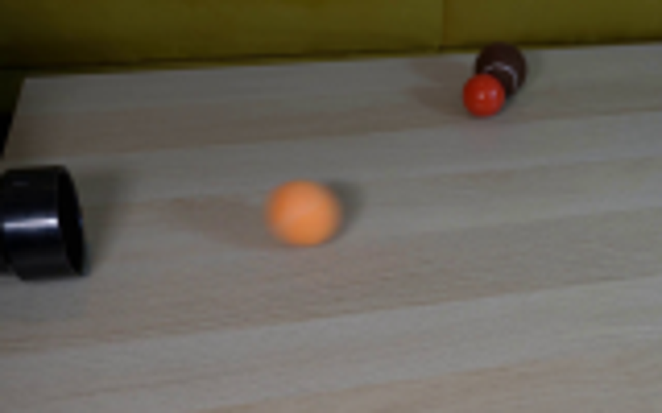
视觉工具实际返回图片 3
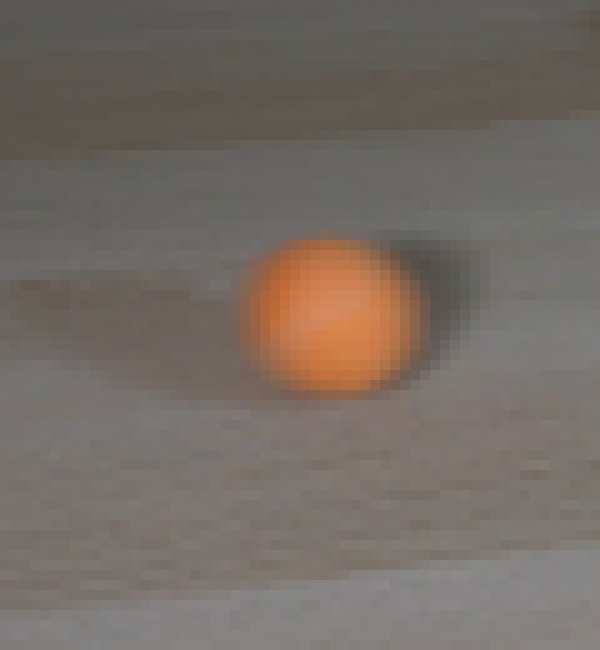
视觉工具实际返回图片 4

视觉工具实际返回图片 5
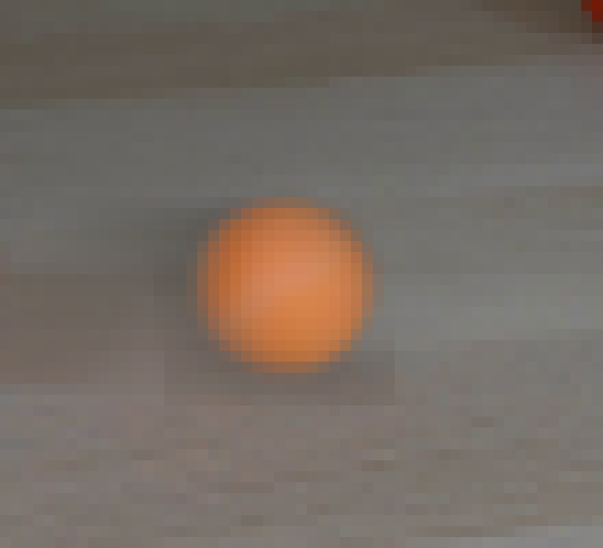
视觉工具实际返回图片 6
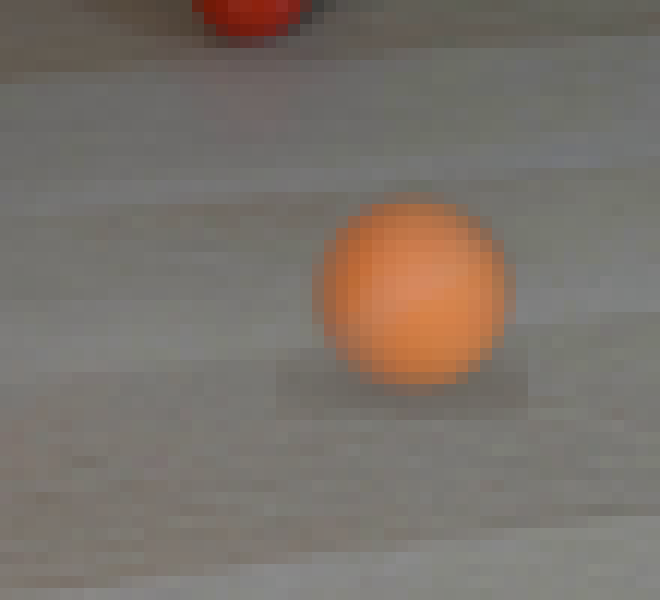
视觉工具实际返回图片 7
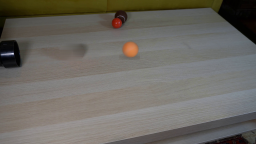
视觉工具实际返回图片 8
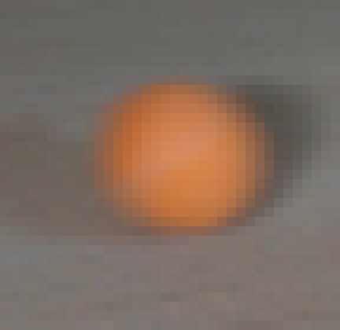
视觉工具实际返回图片 9
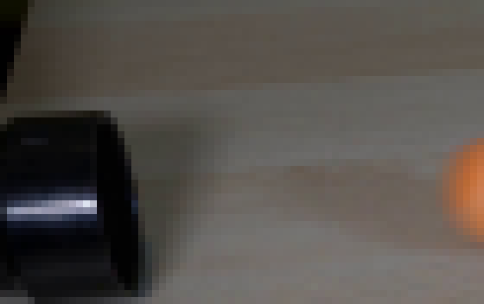
视觉工具实际返回图片 10

视觉工具实际返回图片 11
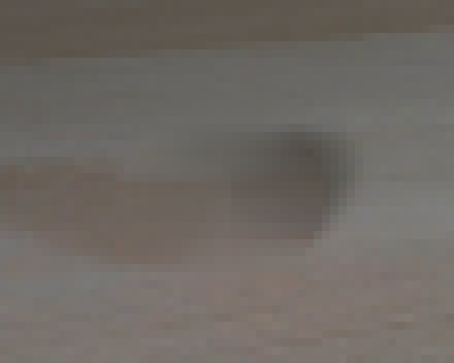
视觉工具实际返回图片 12
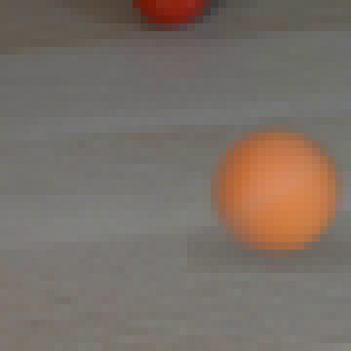
视觉工具实际返回图片 13
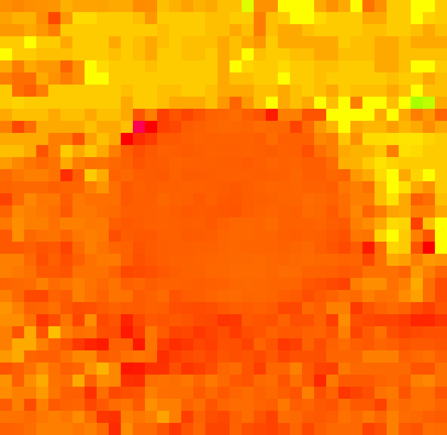
视觉工具实际返回图片 14
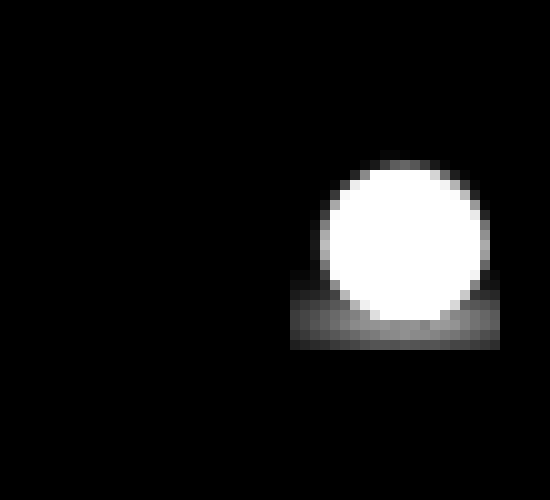
视觉工具实际返回图片 15
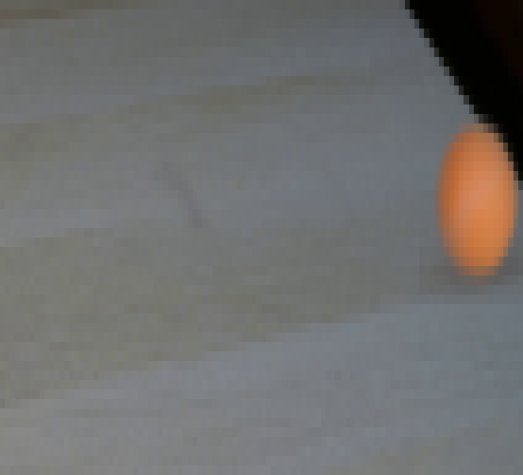
视觉工具实际返回图片 16
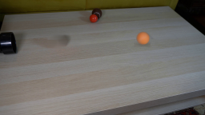
视觉工具实际返回图片 17
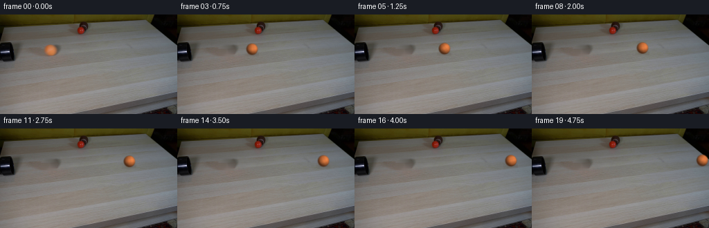
视觉工具实际返回图片 18
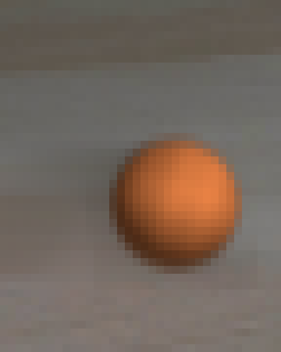
视觉工具实际返回图片 19
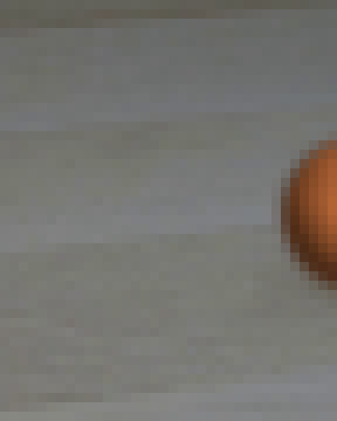
视觉工具实际返回图片 20
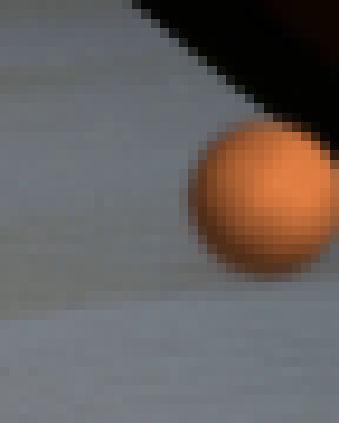
视觉工具实际返回图片 21
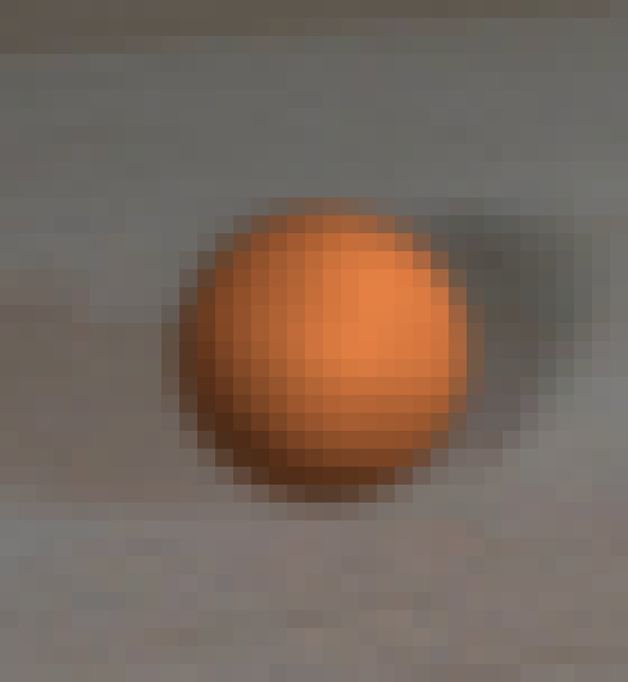
视觉工具实际返回图片 22
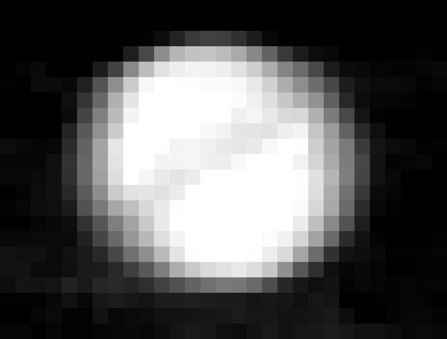
视觉工具实际返回图片 23
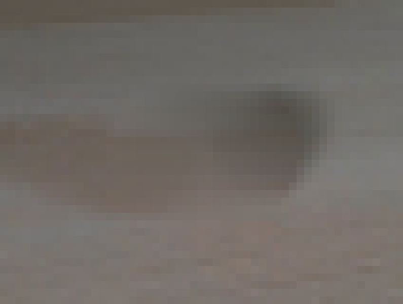
视觉工具实际返回图片 24
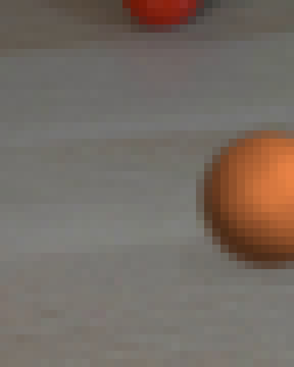
视觉工具实际返回图片 25
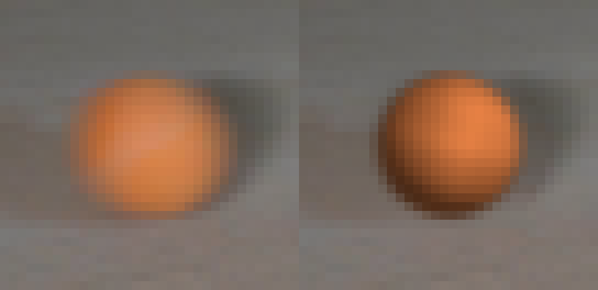
视觉工具实际返回图片 26
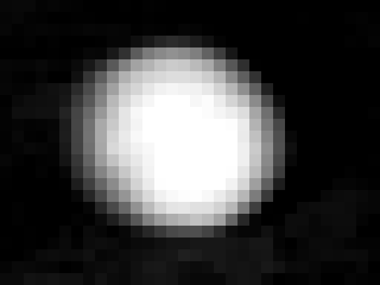
视觉工具实际返回图片 27
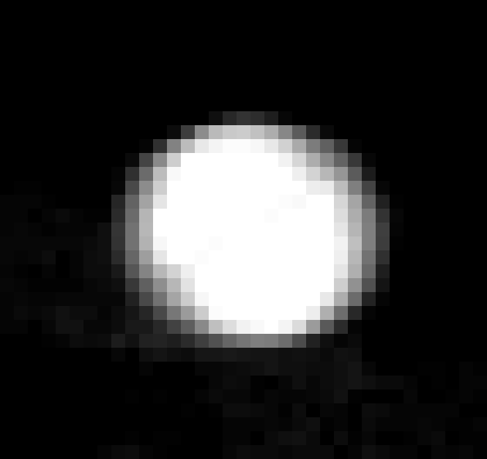
视觉工具实际返回图片 28
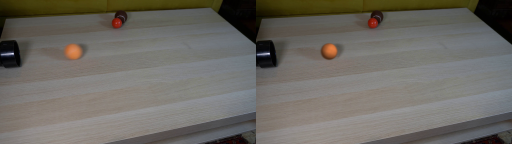
视觉工具实际返回图片 29
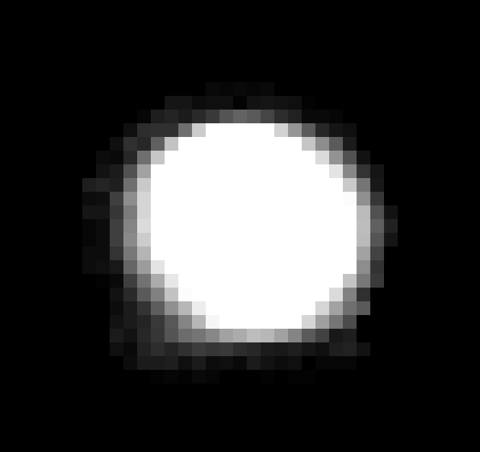
视觉工具实际返回图片 30
视觉工具实际返回图片 31

视觉工具实际返回图片 32

保存候选 3 份；完成命令 48 次；可验证图片返回 32 张。原始 API 响应与完整日志保留在本地。